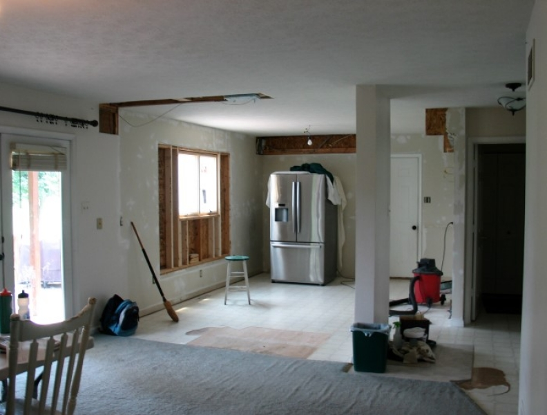

Lo malo de las remodelaciones
Tienes unos meses pensando en cómo se vería tu cocina con una buena remodelación, en tu mente ya está todo listo, nuevos electrodomésticos, una barra por aquí, un nuevo color de cubierta y en ese pequeño espacio de la esquina quedaría perfecta la alacena, en tu mente todo es perfecto, pero una remodelación también acarrea una serie de contratiempos.
Cuando decidimos remodelar un espacio en nuestra casa esperamos un resultado hermoso y nos olvidamos del ajetreo que implica la remodelación, lidiaras con problemas que no son habituales a la rutina y que tendrás que sobrellevar si no quieres perder la cabeza.
Algunas de las situaciones con las que tendrás que convivir durante tu remodelación será:
-
Gastas más de lo planeado:
Aunque ya tengas establecida la cantidad de gasto que destinaras para tu remodelación, siempre surge algún imprevisto que eleva la cantidad inicial, te recomendamos tener un fondo para esas sorpresas.
-
Sorpresas:
Cables sueltos, tuberías rotas, alimañas, nidos y cualquier clase de imprevistos te toparas al hacer tu remodelación, ¿lo bueno de la situación? No tendrás que hacer un costo extra para reparar estos problemitas.
-
Estrés:
Prepárate para recibir llamadas todo el día y contestar preguntas sobre los acabados y el diseño, te recomendamos trabajar con un diseño previo y con profesionales, para que no tengas que estar tomando decisiones apresuradas.
-
Retrasos:
De repente algún proveedor falla, algún insumo no llega a tiempo y la remodelación se retrasa. Si vas a hacer una remodelación para algún evento especial (Algún cumpleaños, boda o reunión) te recomendamos estimar tiempos con exceso para que no tengas que recibir a tus invitados con tu remodelación a medias.
-
Ruidos:
Las remodelaciones siempre vienen acompañadas de ruidos de taladro, puertas y paredes derrumbándose, martillazos, y pasos por todos lados, si odias el ruido, tendrás que prepararte para vivir unos días un poco desagradables, pero seguramente el sacrificio lo vale.
-
Polvo:
Te encontraras limpiando tu casa todo el día, los muebles se llenaran de polvo, algunos electrodomésticos dejaran de funcionar, te recomendamos si es posible aislar el área de remodelación del resto de la casa y guardar muebles y electrónicos en una bodega.
De acuerdo a nuestra experiencia estos sol los principales puntos malos para una remodelación, sobra decir que después de ver el resultado de tu sacrificio, y poder caminar por tu nuevo espacio, veras que todo valió la pena.